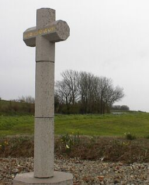
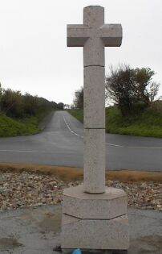
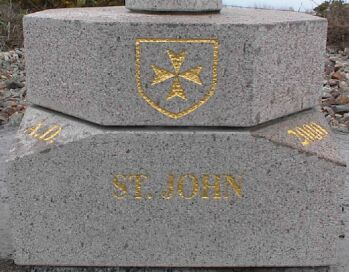

St. John - St Jean

|
The cross stands at the cliff-top side of the junction where the road from St John's Village meets the Route du Nord. The cross was dedicated by the Rector, the Rev Andy Thewlis, and an address was given by the chairman of the St John Group of Churches, the Rev Fred Noden. He said the cross was a symbol not only of Christian faith today but of the 2,000 years which have elapsed since the birth of Christ. The Constable, Carl Hinault, welcomed parishioner Senator Terry Le Sueur, who was representing the Policy and Resources Committee, and Deputy Simon Crowcroft, the president of the Public Services Committee. Mr Hinault joked that although he did not want to make it too much of a parish event, he wanted to point out that the stone came from nearby La Saline Quarry, situated about 300 yards away in the parish, which was supplying the masonry to all the other parishes. The cross had been erected by V and V Stonemasons, another parish-based business, as their own contribution to the parish cross. Two wooden benches near the cross, one in memory of former Constable Clifford Le Vesconte, who served for 20 years from 1953 to 1973, and the other in memory of his wife, Louise. The benches were presented by their family nine members of which were present at the dedication. This is the seventh parish cross which has been put in place. JEP 23/5/2000
|

